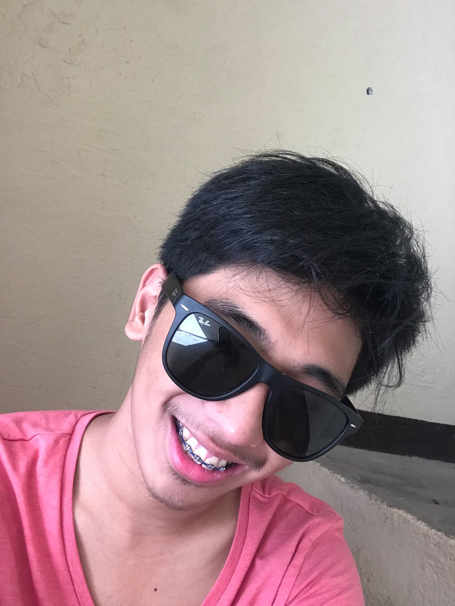

CHILDHOOD YEARS WHEREIN IM A GOODBOY
When I was a child I still remember that my mommy used to wake me up every 7:30 early, early as my first class yup, every morning she wakes me up ready for my food and ready the cartoons that I am gonna watch.1My favorite cartoon is "Tom And Jerry" it is one of my to go cartoon every morning to watch.2and then when the cartoon is finished, my parents always welcoming me with their hug and kisses.3My favorite breakfast food is eating rice and hotdog and bacon up to until now its one of my favorite breakfast food.4after watching and eating, I take a bath and ready for my school.5My Mom and Dad always kiss me before I go to school and hug, saying "I love you mag ingat ka baby ko" that was when I was still young okay?.6I studied at DJEMS, I've spend my elementary for about 6years to be exact.7 Sometimes, My mother always took me to my school and buy me what you called BAON 8After that she always waits for me in the lobby so that we can go home together and eat lunch together.9My Favourite subject is English because I love to read and can well easily understand an English sentence or a poem or a scenario indicated in an English form.10I hate Math even then because I hate numbers but when it comes to money I am an expert11 every time I'm at the school I'm friendly like everyone knows my name and everyone I talk is my friend.12 every time there is a recitation in math I'm always scared to answer because I'm not good in math well when I'm in the mood to understand math I can understand it naman so yeah.13but still even though I'm not good in math I graduated with honors.14 every time I achieved something good my parents are so proud until now.14Seeing my Father stressing out during the weekdays with his work makes me wanna paid of those tirey days.15also seeing my mother having hard time to managed everything makes me wanna say chill mom i got u when I graduate like the both of you dont need to worry about everything na.16ever since I'm in my elementary I have that goal to graduate first17 and after achieving that goal I will set another goal to become stable and rich enough to help my family and those whose in needs.18 They're my motivations up to until now.19in short, I wanna give my best that I can, so that they will be proud and happy for me with my motivations.20
TEENAGE YEARS
TEENAGE YEAR WHERE EVERY FIRSTTHING HAPPEN *WINK* 
This is where every first in my life happen.1In my Teenage year i met a lot of people those people that i still connect with and those people that i just remember that we're friends before.2my teenage year was a roller coaster because even though im in the top there's thrill and happiness and when im at the bottom of my life their my friends that has been in my roller coaster whose not letting me to fall from it3After my elementary graduation i enrolled to JSHS to continue my Highschool.4while studying at JSHS the ambiance is different because of the those higher year than me also different kind of students.5Even though that is my scenario i met some of the students from my old school so its not hard to catch up with them. and they're are the first friends that i bond with.6everyday after our class we used to eat in mcdo get some fries and sundae and we're happy, sometimes we eat calamares,fishball,kwek-kwek when we are hurry to go home.7everytime our teacher gives a group project me and my friends are always teaming up for those group projects.8and our classroom are competitive like every school competition we have someone to compet with and every school competition our classroom always joinin and winning that competition9 every after those winning we celebrate by eating at our room treat by our advisor, sometimes we help each other to gather money and make a small celebration for it.10also having a lot of connections and making friends with other people makes your name well known. thats why when im at highschool nearby students knows me and have idea about me.11Im happy with that my highschool went smoothly not like others having a hardtime.12I graduated my junior highschool in JSHS and then transfer to STI Cubao to continue my senior highschool.13 My senior high school was good and that i can say one of my best year in my life because of the new connections and those friends that until now we are connected to each other14My senior year makes me grow to be matured enough.15 Also let me understand a lot life choices and life scenario16 I learn different kind of things that I can be proud of.17The friends that i met in my senior highschool are the friends that until now have my back and i can trust with.18they're the one that makes me try my first indifferent kind of things in life.19I finished my Junior High School and Senior High School with a good grades and good set of friends.20
COLLEGE YEARS
COLLEGE LIFE IM A GOOOD GOOOD HOEEMAN